Analiza rješenja · JOI Spring Camp 2025 · Dan 1
Izložba 3
O ovom članku
Tekst je prijevod službene japanske prezentacije rješenja, preoblikovan u članak. Slajdovi su ugrađeni kao slike; natpis pod svakim slajdom je prijevod teksta na njemu. Dijelovi označeni kao trenerska napomena nisu u izvornoj prezentaciji — dodani su da popune korake koje slajdovi preskaču ili samo skiciraju.
-
1Naslov; analiza: Watanabe Yuto (yuto1115). -
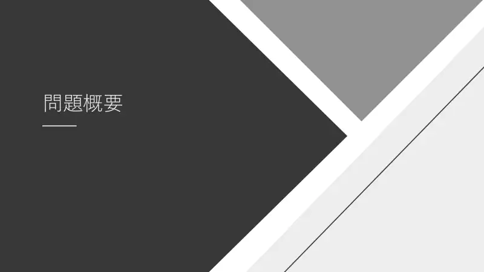
2Pregled. -
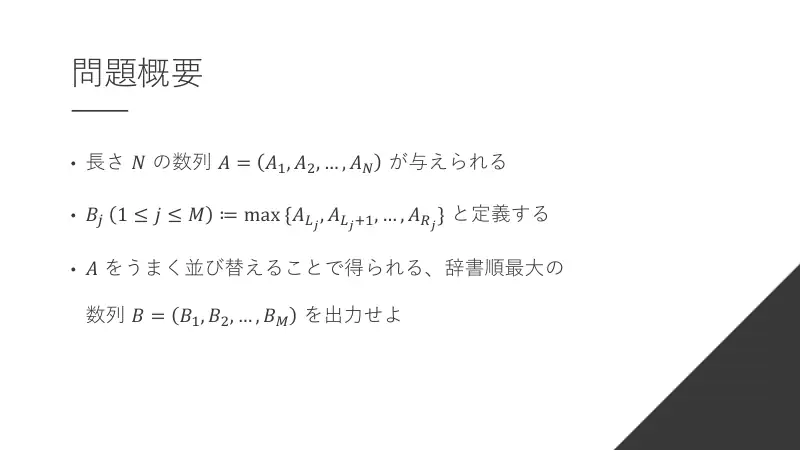
3Zadan $A$; $B_j=\max A[L_j..R_j]$; permutiraj $A$ da $B$ bude leksikografski najveći. -
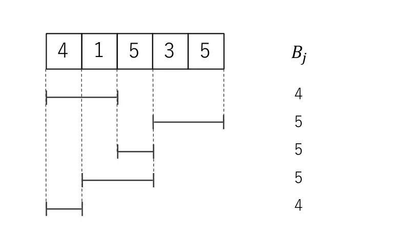
4Primjer poretka $4,1,5,3,5$ s $B=(4,5,5,5,4)$. -
5Bolji poredak $3,5,4,5,1$: $B=(5,5,4,5,3)$.
Korak 1: polinomno podzadatak 1, 19
-
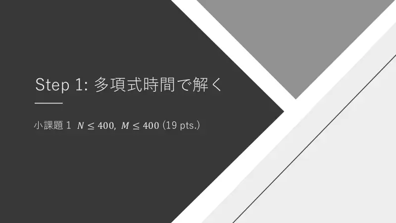
6Podzadatak 1: $N,M\le400$. -
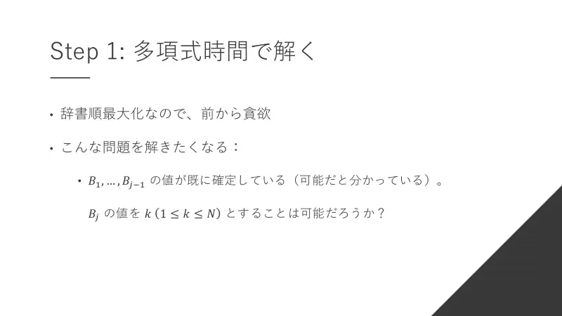
7Leksikografski → greedy sprijeda: uz fiksirane $B_1..B_{j-1}$, može li $B_j=k$? -
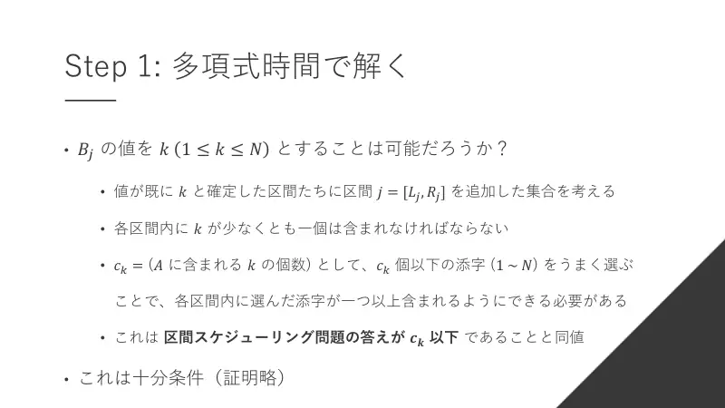
8Intervali s vrijednošću $k$ plus $j$: svaki mora sadržavati neki $k$; $c_k$ kopija → treba $\le c_k$ indeksa koji probadaju sve te intervale. -
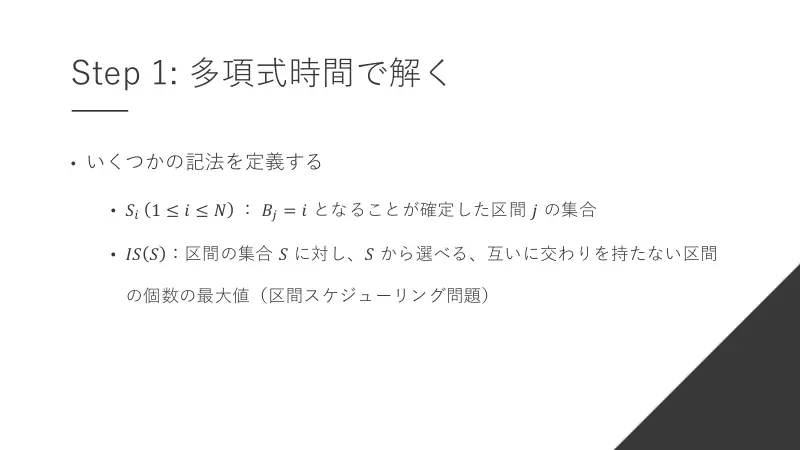
9Oznake: $S_i$ = intervali s $B=i$; $\mathrm{IS}(S)$ = najveći broj disjunktnih intervala (intervalno raspoređivanje) = najmanji probadajući skup. -
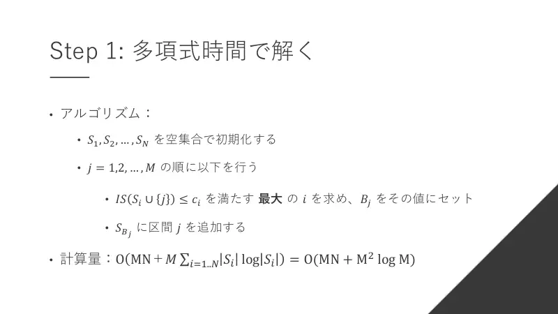
10Algoritam: za $j=1..M$: $B_j=\max\{i:\mathrm{IS}(S_i\cup\{j\})\le c_i\}$, dodaj $j$ u $S_{B_j}$. $O(MN+M^2\log M)$.
Korak 2: brži IS podzadaci 2–3, 28
-
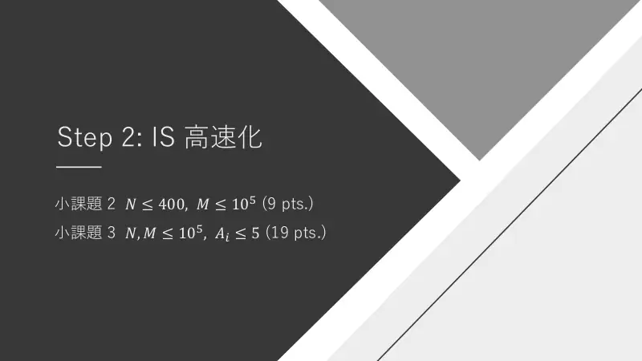
11Podzadatak 2 ($N\le400$, $M\le10^5$), podzadatak 3 ($A_i\le5$). -
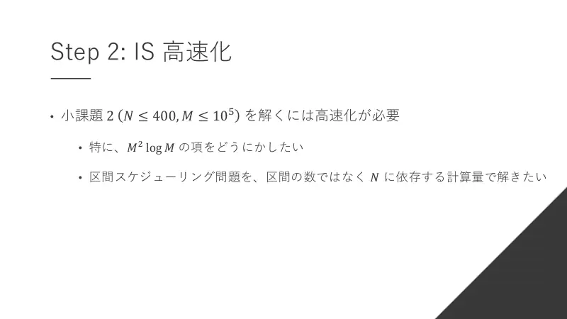
12Treba se riješiti člana $M^2\log M$: riješiti IS s ovisnošću o $N$, ne o broju intervala. -
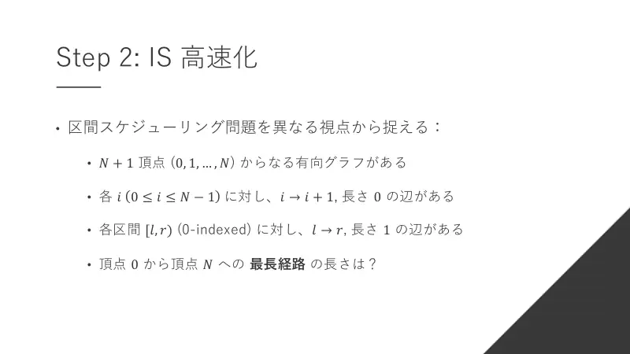
13IS = najduži put $0\to N$ u grafu: $i\to i+1$ duljine 0, $l\to r$ duljine 1 za $[l,r)$. -
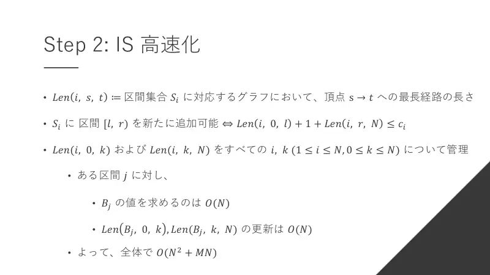
14$\mathrm{Len}_i(s,t)$; $[l,r)$ može u $S_i$ iff $\mathrm{Len}_i(0,l)+1+\mathrm{Len}_i(r,N)\le c_i$; čuvaj $\mathrm{Len}_i(0,k)$, $\mathrm{Len}_i(k,N)$ za sve $i,k$: $O(N)$ za $B_j$, $O(N)$ ažuriranje → $O(N^2+MN)$. -
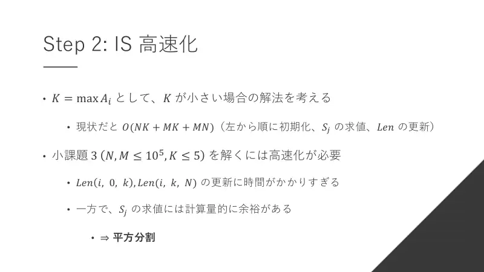
15$K=\max A$: sad $O(NK+MK+MN)$; za $N,M\le10^5$, $K\le5$ ažuriranje Len je preskupo, evaluacija ima prostora → korjenska dekompozicija. -
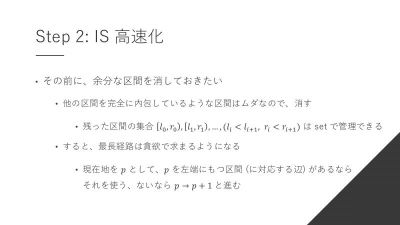
16Prvo izbaci intervale koji sadrže druge; preostali $(l_i,r_i)$ rastu u oba kraja ( set); najduži put greedyjem: iz $p$ skoči intervalom koji počinje u $p$, inače $p\to p+1$. -
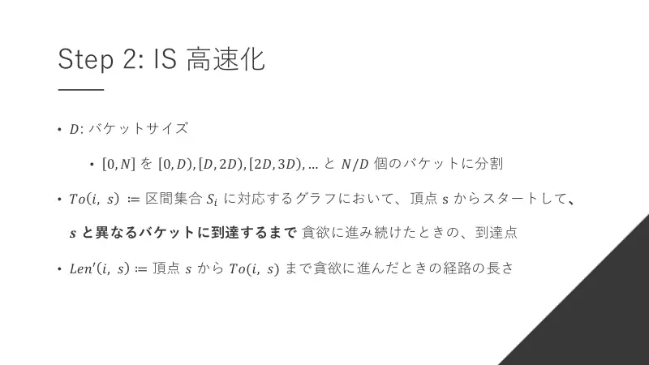
17Blokovi veličine $D$; $\mathrm{To}_i(s)$ = prvi vrh izvan bloka od $s$ pri greedyju; $\mathrm{Len}'_i(s)$ = duljina do njega. -
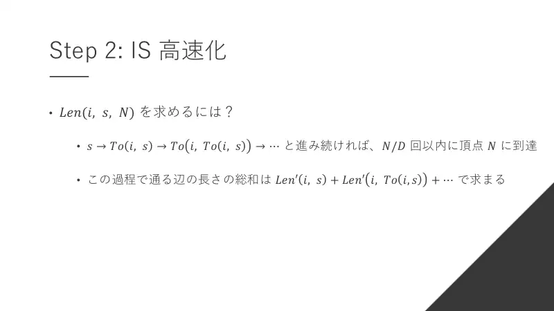
18$\mathrm{Len}_i(s,N)$: skakanje $s\to\mathrm{To}(s)\to\dots$, $\le N/D$ puta, zbroj $\mathrm{Len}'$. -
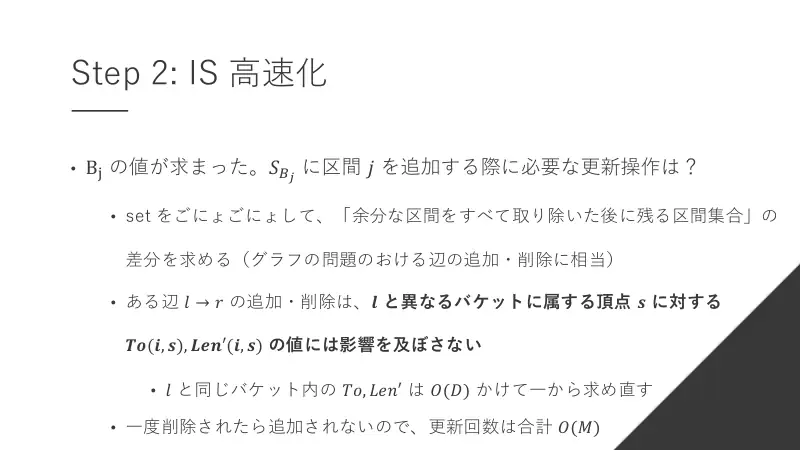
19Nakon $B_j$: dodaj $j$ u $S_{B_j}$; setdaje razliku nedominiranih intervala (dodani/obrisani bridovi); brid $l\to r$ utječe samo na $\mathrm{To},\mathrm{Len}'$ u bloku od $l$ → preračun $O(D)$; obrisan se ne vraća → $O(M)$ ažuriranja. -
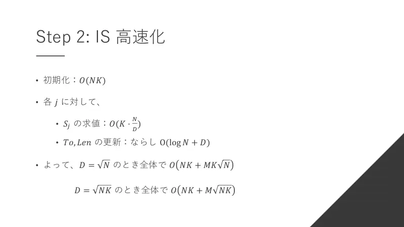
20Inicijalizacija $O(NK)$; po $j$: evaluacija $O(K\cdot N/D)$, ažuriranje $O(\log N+D)$ amortizirano. $D=\sqrt N$: $O(NK+MK\sqrt N)$; $D=\sqrt{NK}$: $O(NK+M\sqrt{NK})$.
Korak 3: veliki $N$ podzadaci 4–5, 29
-
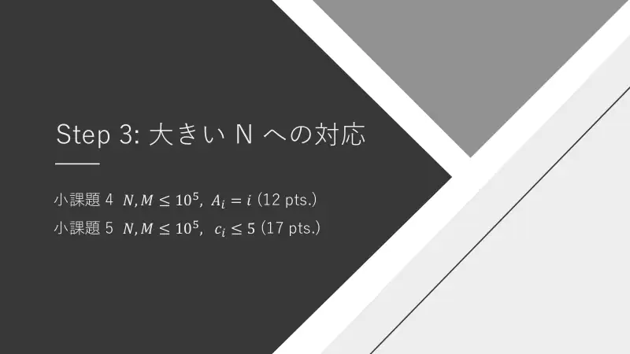
21Podzadatak 4 ($A_i=i$), podzadatak 5 ($c_i\le5$). -
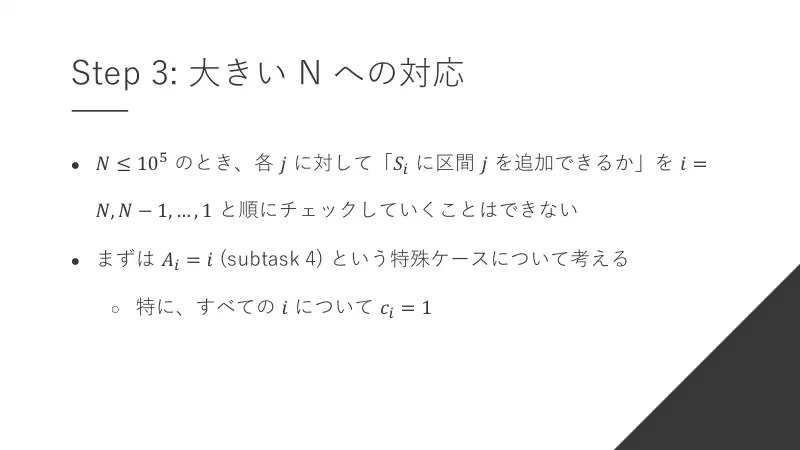
22Za $N\le10^5$ ne možemo provjeravati $i=N,N-1,\dots$; prvo $A_i=i$, tj. svi $c_i=1$. -
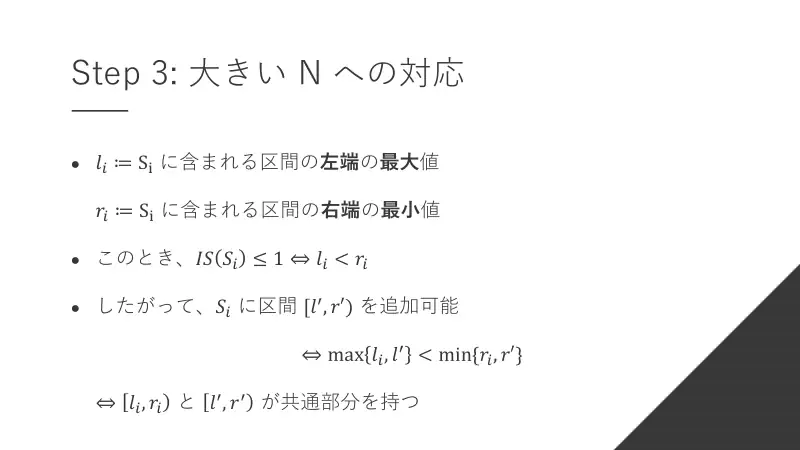
23$l_i=\max$ lijevih, $r_i=\min$ desnih krajeva u $S_i$; $\mathrm{IS}\le1\iff l_i\lt r_i$; $[l',r')$ može u $S_i$ iff $[l_i,r_i)$ i $[l',r')$ se sijeku. -
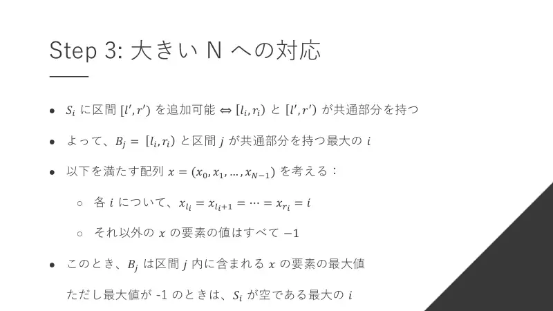
24$B_j$ = najveći $i$ čiji $[l_i,r_i)$ siječe $j$. Niz $x$: $x=i$ na $[l_i,r_i)$, inače $-1$; $B_j=\max x$ na $j$; ako $-1$, najveći $i$ s praznim $S_i$. -
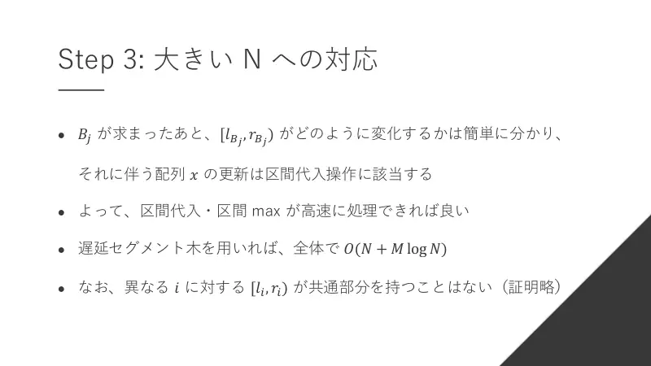
25Nakon $B_j$ raspon $[l_{B_j},r_{B_j})$ se lako ažurira = dodjela na raspon; lijeno segmentno stablo (dodjela, max): $O(N+M\log N)$. Rasponi različitih $i$ se ne sijeku. -
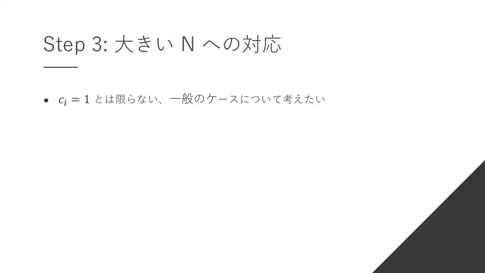
26Opći slučaj $c_i\gt1$. -
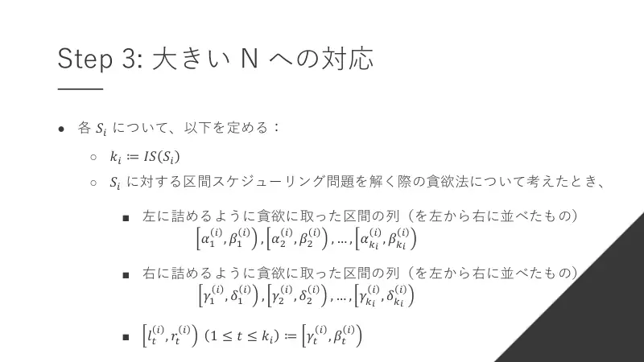
27Za $S_i$: $k_i=\mathrm{IS}(S_i)$; lijevo-pohlepni niz $[\alpha_t,\beta_t)$, desno-pohlepni $[\gamma_t,\delta_t)$; $[l^i_t,r^i_t):=[\gamma_t,\beta_t)$. -
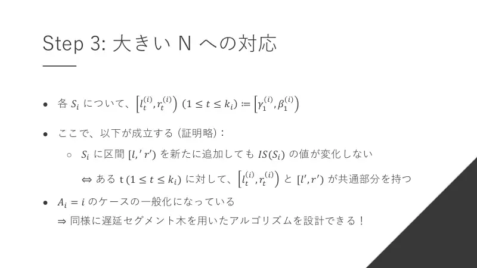
28Tvrdnja: dodavanje $[l',r')$ ne mijenja $\mathrm{IS}(S_i)$ iff siječe neki $[l^i_t,r^i_t)$. Poopćenje slučaja $A_i=i$ → isti pristup sa segmentnim stablom. -
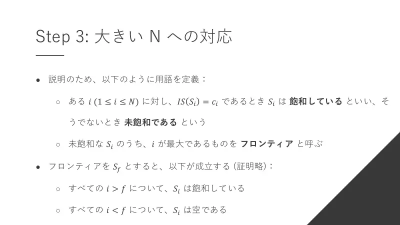
29$S_i$ je zasićen ako $\mathrm{IS}(S_i)=c_i$; fronta = nezasićeni s najvećim $i$. Svi $i\gt f$ zasićeni, svi $i\lt f$ prazni. -
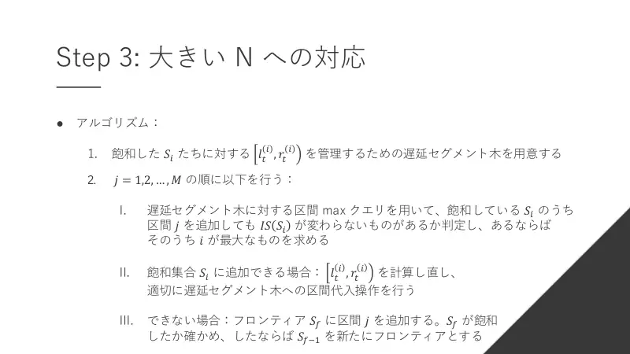
30Algoritam: segmentno stablo jezgri zasićenih skupova; za $j$: I. max nad $j$ → najveći zasićeni $i$ koji prima; II. ako postoji, preračunaj jezgre od $S_i$ i dodijeli raspone; III. inače dodaj u frontu $S_f$; ako se zasiti, fronta postaje $f-1$. -
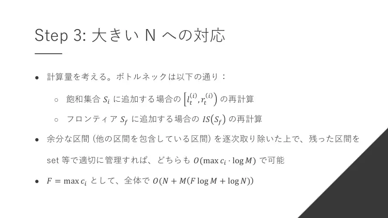
31Usko grlo: preračun jezgri zasićenog skupa i $\mathrm{IS}$ fronte; s set-om nedominiranih intervala oba $O(F\log M)$, $F=\max c_i$; ukupno $O(N+MF(\log M+\log N))$.
Korak 4: spajanje podzadatak 6, 24
-
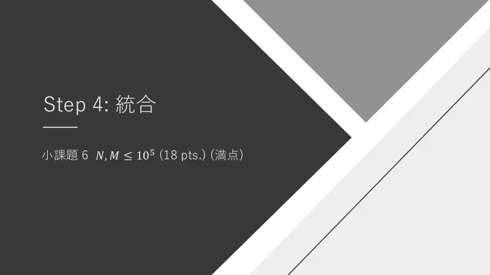
32Podzadatak 6: puni bodovi. -
33Uska grla iz podzadatka 5: preračun jezgri zasićenog skupa $O(F\log M)$ i $\mathrm{IS}$ fronte $O(F\log M)$. -
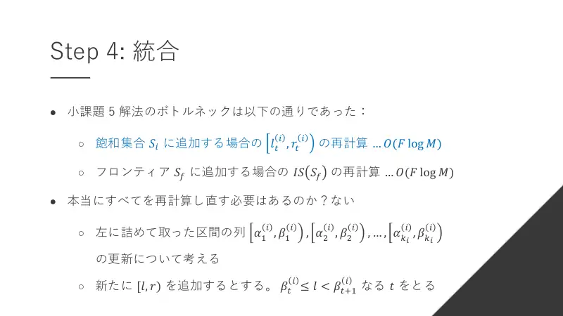
34Treba li sve preračunati? Ne. Za lijevo-pohlepni niz nakon dodavanja $[l,r)$ nađi $t$ s $\beta_t\le l\lt\beta_{t+1}$. -
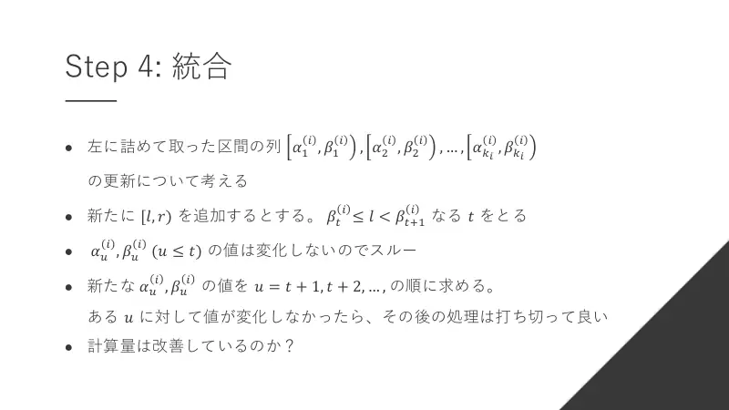
35$u\le t$ se ne mijenja; računaj $u=t+1,t+2,\dots$ i prekini kad se vrijednost ne promijeni. Je li to brže? -
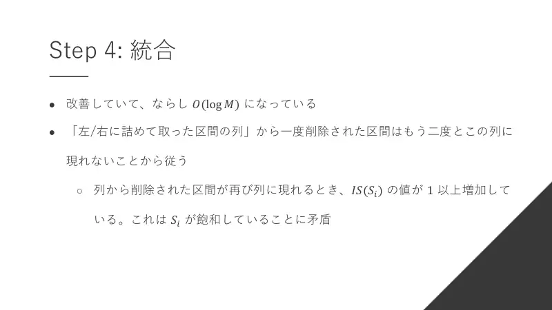
36Da, amortizirano $O(\log M)$: interval jednom izbačen iz pohlepnog niza više se ne vraća (povratak bi značio da $\mathrm{IS}$ raste — kontradikcija sa zasićenošću). -
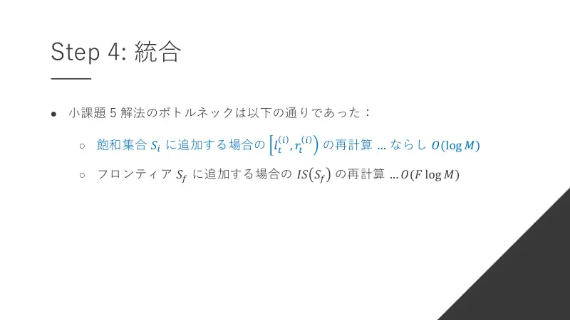
37Sad: zasićeni amortizirano $O(\log M)$; fronta još $O(F\log M)$. -
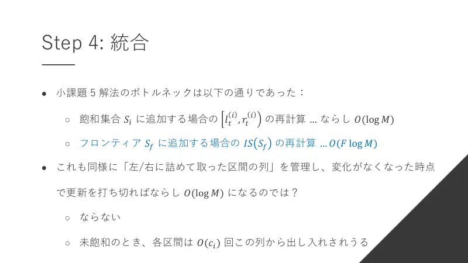
38Isti trik za frontu? Ne radi: dok je nezasićen, interval može ulaziti i izlaziti $O(c_i)$ puta. -
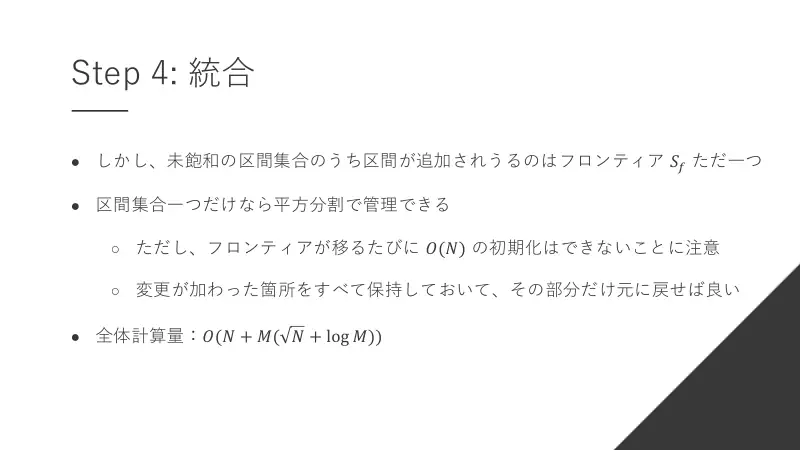
39Ali samo jedan nezasićeni skup prima intervale — frontu drži korjenskom dekompozicijom (korak 2); pri seljenju fronte ne inicijaliziraj $O(N)$, nego pamti promijenjena mjesta i vrati ih. Ukupno $O(N+M(\sqrt N+\log M))$. -
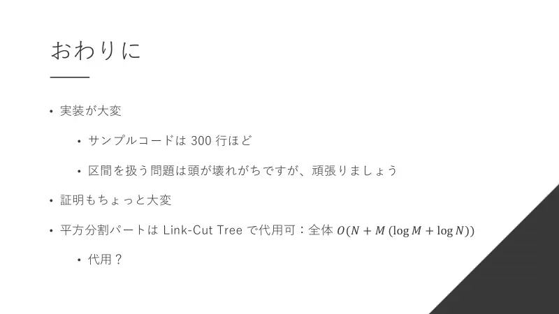
40Implementacija naporna (~300 redaka), dokazi također; umjesto korjenske dekompozicije Link-Cut stablo: $O(N+M(\log M+\log N))$.
-
41Raspodjela bodova. -
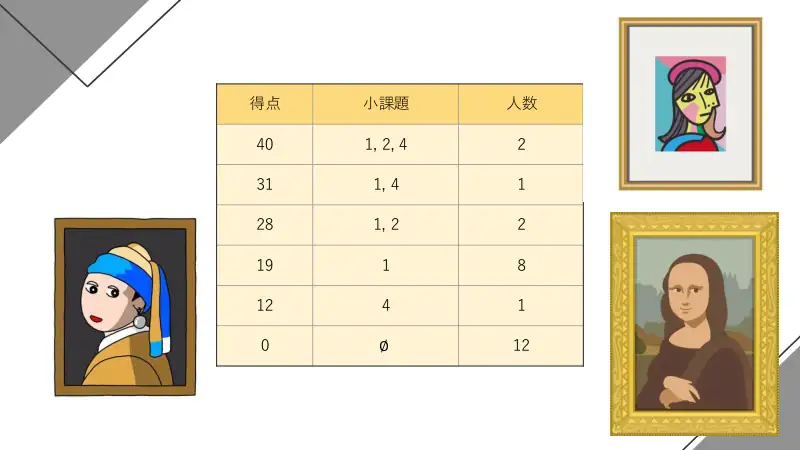
4240 (1,2,4) — 2; 31 (1,4) — 1; 28 (1,2) — 2; 19 (1) — 8; 12 (4) — 1; 0 — 12.
Sažetak
- Greedy po $j$: $b_j$ = najveći $i$ s $\mathrm{IS}(S_i\cup\{j\})\le c_i$; ispravnost preko jezgri.
- Zasićeni skupovi: jezgre $[\gamma_t,\beta_t)$ u lijenom segmentnom stablu; preračun amortizirano $O(\log M)$.
- Fronta (jedini nezasićeni koji prima): korjenska dekompozicija s vraćanjem ili LCT.